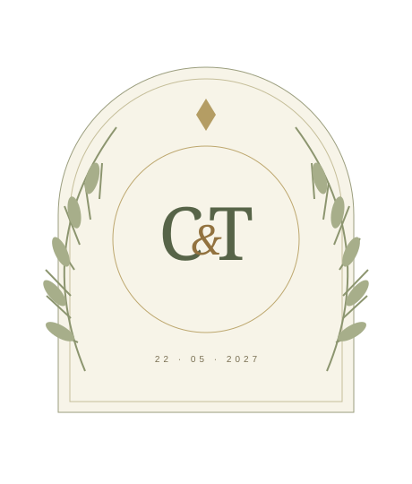

Clara &
Tomás
O melhor da vida
é quando vira nós.
22 de maio de 2027 · 16h
Jardim das Oliveiras · local fictício

COM AMOR, PARA UM NOVO CAPÍTULO— dias para celebrar
Esta data não corresponde a uma cerimônia real.De um encontro
a um para sempre.
Na história fictícia deste casal, tudo começou com um café sem pressa. Vieram as conversas longas, as viagens pequenas e a vontade de dividir os próximos capítulos.
Em um site real, este espaço ganha as palavras e as fotografias autorizadas dos noivos. Aqui, a história é apenas um exemplo de como contar o que torna cada celebração única.
Para os dias leves.
Para os dias difíceis.
Para todos os dias.
Um dia para
guardar inteiro.
A cerimônia
O momento de começar uma nova história.
O primeiro brinde
Encontros, abraços e boas conversas.
À mesa
Tempo de compartilhar e celebrar.
A pista é nossa
Música para encerrar este dia imaginado.
Cada detalhe
também é carinho.
- Local
- Jardim das Oliveiras — nome fictício, sem endereço real.
- Traje sugerido
- Esporte fino, apenas para ilustrar a informação.
- Como chegar
- Em um evento real, aqui entrariam o endereço confirmado e um link de mapa.
Não há reserva de espaço, contratação de buffet ou evento acontecendo por este site.
Seu carinho é
o melhor presente.
Uma lista pode reunir experiências, itens ou links escolhidos pelo casal. Aqui são só ideias ilustrativas, sem cobrança, Pix ou compra.
Um cantinho de casa
Conhecer a ideia +
Em uma lista real, o casal poderia indicar um produto ou loja. Nenhum presente pode ser comprado nesta demonstração.
A próxima viagem
Conhecer a ideia +
Uma forma de apresentar uma experiência de viagem. Pagamentos e contribuições exigem um serviço próprio e configuração segura.
Tempo a dois
Conhecer a ideia +
Jantar, passeio ou uma lembrança especial. Este cartão não faz reserva nem recebe contribuições.
Cada presença
faz diferença.
Experimente como seria confirmar presença. Use um nome fictício: este formulário só gera uma prévia no seu navegador, não entra em lista de convidados.
Nada é enviado a um casal, salvo em servidor ou guardado no navegador. Em um evento real, é necessário configurar o recebimento e proteger os dados dos convidados.
Prévia demonstrativa
Antes de
celebrar.
Este casamento é real?
Não. Clara, Tomás, a história, a data e o espaço são fictícios e foram criados para demonstrar o modelo.
A confirmação chega aos noivos?
Não. O formulário apenas prepara uma prévia e um arquivo de texto. Uma lista real precisa de integração, regras de acesso e tratamento adequado de dados.
Posso adaptar para meu casamento?
Sim. A proposta pode contemplar textos, cores, imagens, programação e os recursos que vocês precisarem. Confirmação real e lista de presentes são definidas por orçamento.
A próxima história pode ser a sua.
Converse com a MOSS sobre um site de casamento com a identidade de vocês.
Quero um site assim ↗